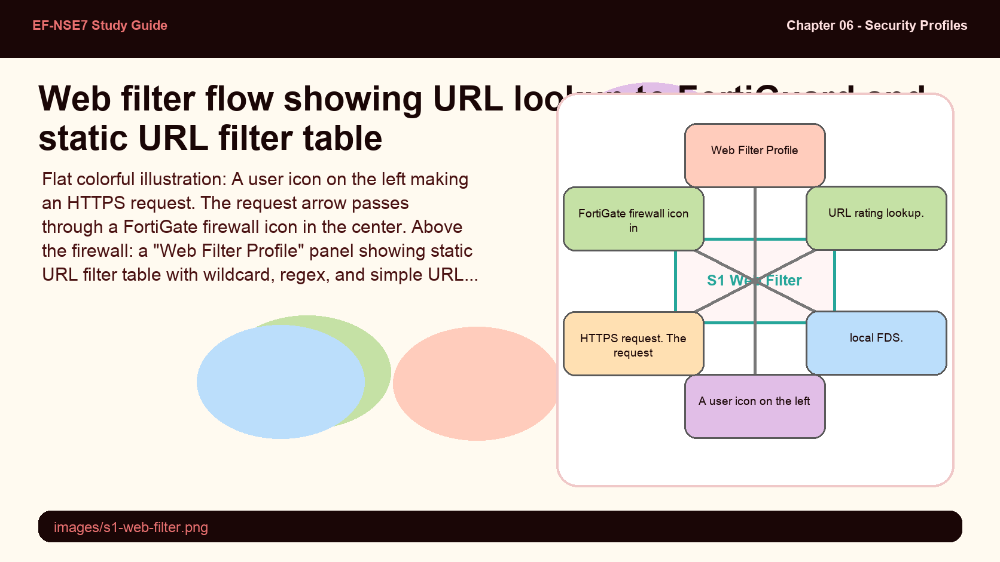
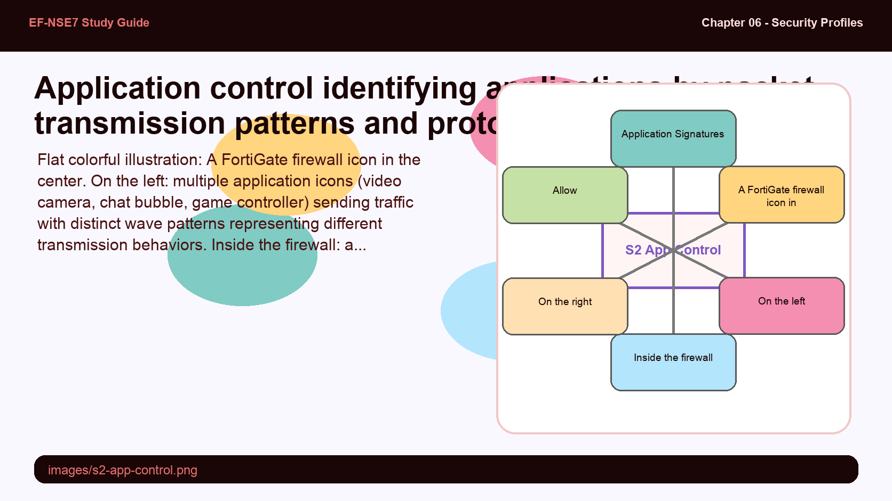
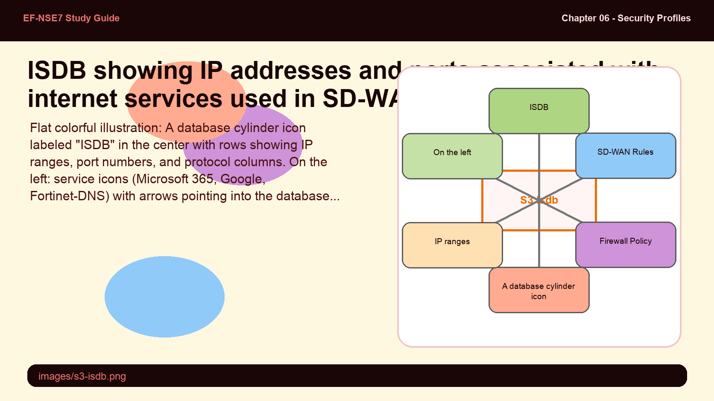
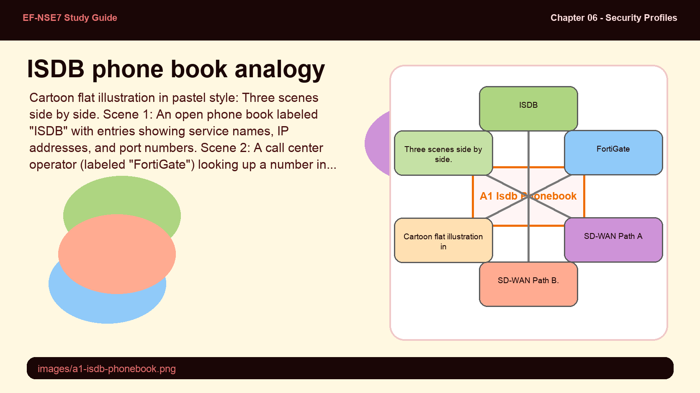
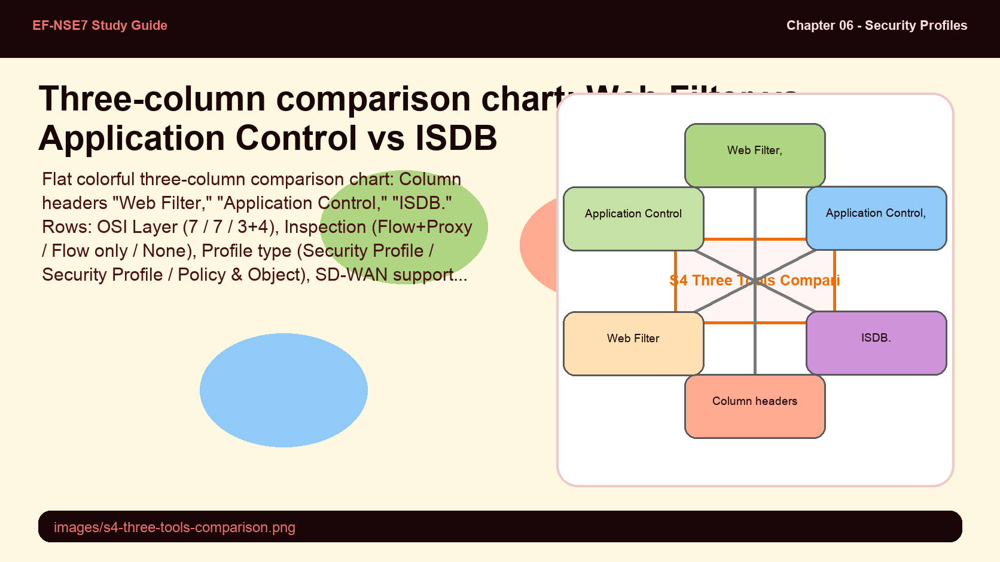

Web filter is a security profile that manages access to websites — but it does so by inspecting content at Layer 7 (URLs, domains, SNI, SAN). It works in both flow and proxy mode, and it depends on FortiGuard for its URL rating database. The key nuance is that the database itself does not live on the firewall.
- Web filter queries FortiGuard for URL ratings on-demand — it doesn't host the database locally. How does FortiManager change this behavior, and what problem does caching solve?
- Web filter supports both flow-based and proxy-based inspection. What additional capabilities does proxy-based mode add over flow-based, and when would you choose each?
Web Filter — URL and Domain Access Control

Web filter inspects URLs at Layer 7. FortiGuard provides category ratings — the database lives in the cloud, not on the firewall.
Web filter is a security profile that manages website access by inspecting content, URLs, domains, server name indications (SNI), or SANs. It operates at OSI Layer 7 (Application layer) in both flow-based and proxy-based inspection modes. Web filter is applied in firewall policies and internet policies.
Its primary use case is to limit access to specific URL websites and apply category-based access control to web traffic. Web filter supports a static URL filter with three match types: simple (exact match), wildcard (*.something.org/*), and regular expression (^something\.org/big/*). URL filter checks are performed first, before FortiGuard category rating.
Web filter depends on FortiGuard for category ratings. Unlike application control and ISDB (which store their databases locally), the web filter database is not hosted on the FortiGate. FortiGate must query FortiGuard or FortiManager (acting as a local FDS) for rating lookups on-demand. FortiGate caches recent web filter lookups to improve performance and reduce repeated cloud queries.
config webfilter profile
edit "profile"
config web
set urlfilter-table [table-id]
end
next
end
# Check web filter database version
diagnose autoupdate versionsApplication control doesn't care about URLs — it identifies applications by how they communicate: packet patterns, protocol decoders, and rate-based IPS signatures. This means it can identify a VoIP app or a game even if that app uses HTTPS on port 443 and shares the same domain as legitimate traffic.
- Application control is flow-based only — it cannot be used in proxy mode. Why does application identification by transmission pattern require flow-based inspection rather than proxy-based?
- Application control is used in SD-WAN rules to steer traffic, but this requires enabling "Application Detection-Based SD-WAN" under System > Feature Visibility. Why would you need application-level visibility to make traffic-shaping decisions?
Application Control — Layer 7 Identification by Behavior

Application control identifies applications by how they behave — not by URL — making it effective against apps that tunnel over HTTPS.
Application control is a security profile that identifies applications through their transmission patterns, using application signatures, protocol decoders, and rate-based IPS signatures to spot anomalies. It operates at OSI Layer 7 but is flow-based only — proxy mode is not supported.
Application control is placed in internet policies, firewall policies, and traffic shaping policies. It can limit access to non-URL-based software (e.g., peer-to-peer applications, games, VoIP clients) where web filter would be ineffective because those applications don't use standard URLs for identification.
Application control also plays a key role in SD-WAN rules — it can steer application traffic to specific WAN links based on application identity. However, this requires enabling the Application Detection-Based SD-WAN feature under System > Feature Visibility. Like web filter, application control depends on FortiGuard for its Application Definitions database, which is stored locally on the firewall and updated via diagnose autoupdate versions.
config application list
edit "profile"
set comment "Block P2P apps"
next
end
# Check application definitions database version
diagnose autoupdate versions
# Look for: Application Definitions sectiondiagnose autoupdate versions and search for the "Application Definitions" section in the output.diagnose autoupdate versions → "Application Definitions."ISDB is not a security profile — it's a policy and object tool. It holds a database of IP addresses and port numbers associated with known internet services, letting FortiGate make decisions at Layers 3 and 4 without ever inspecting the traffic content.
- ISDB operates at Layers 3 and 4 with no traffic inspection. What does this mean for its performance impact compared to web filter or application control, and where in the FortiGate GUI is it configured?
- ISDB is essential for SD-WAN rules limiting traffic to specific vendors or geographical zones. Why would IP+port-based identification be sufficient for SD-WAN steering when content inspection is not available?
ISDB — Internet Service Database

ISDB matches traffic by IP address and port — no content inspection required. It lives in Policy & Objects, not Security Profiles.
The Internet Service Database (ISDB) is fundamentally different from web filter and application control: it is a policy and object tool, not a security profile. It holds a database of IP addresses for Layer 3 use and TCP/UDP ports for Layer 4 usage, and operates without inspecting the traffic.
ISDB is found under Policy & Objects → Internet Service (in the Firewall Addresses section), not under Security Profiles. It can be used in internet policies, firewall policies, and SD-WAN rules — particularly for limiting traffic to certain vendors or geographical zones. This makes it a powerful tool for SD-WAN steering without the overhead of content inspection.
Like application control, ISDB depends on FortiGuard for its database, which is stored locally on the FortiGate. Use diagnose autoupdate versions and search for "Internet-service Full Database" to see the current version and last update date.
config firewall internet-service-name
edit "service"
next
end
# Check ISDB version
diagnose autoupdate versions
# Look for: Internet-service Full Database sectionISDB is like a phone book for the internet — you look up the service name and get a list of known IP addresses and ports, no conversation required.
- ISDB service entry — maps to a phone book listing: name → known contact numbers (IPs + ports)
- No traffic inspection — maps to not needing to listen to the call; just knowing who is being dialed is enough to route it
- SD-WAN rule using ISDB — maps to a call center routing rule: "calls to this number go to line A, others go to line B"

diagnose autoupdate versions → "Internet-service Full Database." Used in SD-WAN rules for vendor/geo-based steering.All three tools can be used in internet policies and firewall policies — but only ISDB can appear in SD-WAN rules natively, and only application control requires a special feature flag for SD-WAN. Web filter is the only one that cannot perform traffic shaping. Getting these distinctions right on the exam requires memorizing the placement matrix.
- Web filter and application control both depend on FortiGuard, but web filter's database is not local while application control's is. How does this difference affect firewall behavior when FortiGuard connectivity is lost?
- All three tools require FortiGuard updates to function properly. What command checks whether these updates are current, and how do you distinguish the web filter cache from the application control database in that output?
Comparison and Placement in Enterprise Networks

The key differentiator: ISDB is not a security profile and does no inspection — it's a policy matching object.
| Feature | Web Filter | Application Control | ISDB |
|---|---|---|---|
| OSI Layer | Layer 7 | Layer 7 | Layer 3 & 4 |
| Inspection | Flow + Proxy | Flow only | None |
| Profile type | Security Profile | Security Profile | Policy & Object |
| Internet Policies | Yes | Yes | Yes |
| Traffic Shaping | No | Yes | No |
| SD-WAN Rules | No | Yes (needs feature flag) | Yes (native) |
| Database location | Cloud (FDS/FortiManager) | Local | Local |
| FortiGuard dependency | On-demand query | Periodic update | Periodic update |
All three features require FortiGuard updates. If FortiGuard updates are not applied, malfunctions can occur. To confirm update status for application control and ISDB, use diagnose autoupdate versions. Web filter's database is not local; FortiGate queries FortiGuard or FortiManager (local FDS) for ratings.
To use application control within SD-WAN rules, enable Application Detection-Based SD-WAN under System > Feature Visibility. This is not required for ISDB in SD-WAN — ISDB is available natively in SD-WAN rule destination matching. Web filter cannot be used in SD-WAN rules or traffic shaping policies.